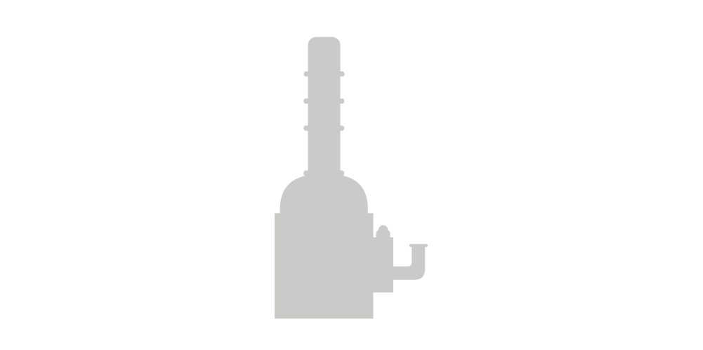
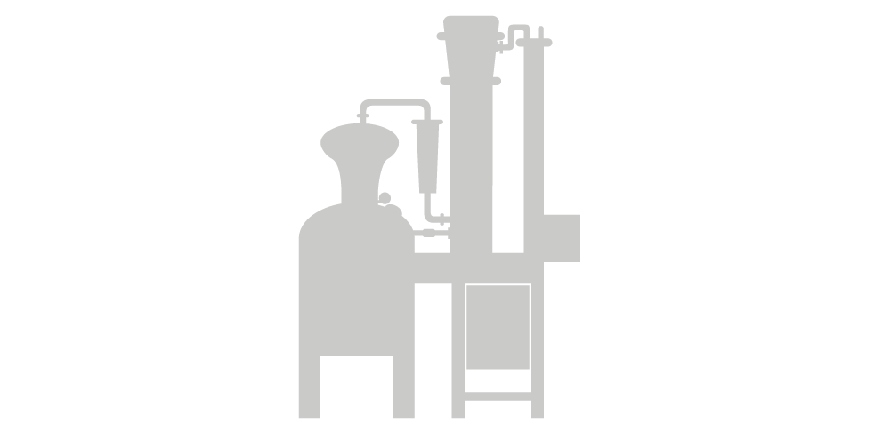

Unsere Leidenschaft ist die liebevolle handwerkliche Herstellung hochwertiger Destillate aus besten Grundstoffen/Zutaten.
Wir lieben es, aus regionalen Produkten hochwertige Destillate herzustellen, diese Leidenschaft für Destillate verbindet unser Team.
Unser Arbeitspferd, liebevoll Tante Emma genannt, die Mutter aller Brennblasen, umfasst 450 Liter und ist unsere wichtigste Maschine für die Herstellung von Rohbränden.


Für die Herstellung unserer Feinbrände verwenden wir unsere neue Destillationsanlage mit einer Blasengrösse von 150 Liter und Aromakorb für den Gin.